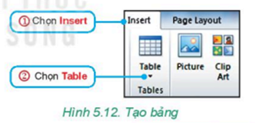
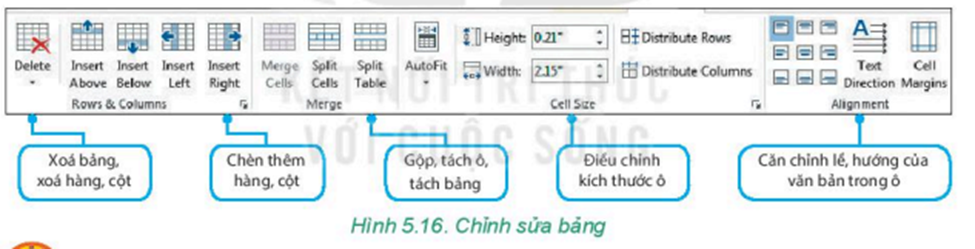

- Một phiếu khảo sát về sở thích đối với các trò chơi tập thể đã được phát cho học sinh trong lớp. Kết quả trả lời của các phiếu khảo sát được thống kê trong bảng sau:
- Chúng ta có thể sử dụng bảng để trình bày thông tin một cách cô đọng. Bảng cũng thường được sử dụng để ghi lại dữ liệu của công việc thống kê, điều tra, khảo sát,... Từ bảng dữ liệu, em có thể dễ dàng tìm kiếm, so sánh, tổng hợp được thông tin.
- Trong phần mềm soạn thảo văn bản, các lệnh tạo bảng nằm trong thẻ Insert ở nhóm lệnh Table. Cách mở cửa sổ Insert Table được thực hiện như Hình 5.12:
Lưu ý: Cách tạo bảng như trên chỉ tạo được bảng có tối đa 10 cột, 8 hàng. Nếu muốn tạo bảng có nhiều hàng, cột hơn, em thực hiện như sau:
- Khi em đặt con trỏ soạn thảo trong bảng, nhóm thẻ Table Tools sẽ xuất hiện giúp em định dạng bảng. Để chỉnh sửa bảng, em chọn thẻ Layout. Các nhóm lệnh để chỉnh sửa bảng được chú thích trong Hình 5.16.
- Xác định số cột, số hàng của bảng trong minh hoạ ở Hình 5.11, bảng chứa thông tin của giáo viên chủ nhiệm và các học sinh trong lớp, bảng này gồm 4 cột và 4 hàng.
- Em có thể ước tính số cột, số hàng của bảng dựa trên số thành viên của lớp. Cũng có thể tạo hai bảng, bảng danh sách giáo viên và bảng danh sách học sinh. Phần hướng dẫn thực hành sau đây tạo bảng 4 hàng 4 cột như minh hoạ trong Hình 5.11
- Ở Hình 5.11, phần chứa thông tin của giáo viên chủ nhiệm được trình bày trong một ô to, được gộp từ 4 ô nhỏ của bảng. Do đó, cần chỉnh sửa lại bảng để tạo một ô to từ các ô nhỏ.
- Kéo thả chuột để chọn bốn ô của bảng.
- Trong nhóm thẻ Table Tools, chọn thẻ Layout.
- Trong nhóm lệnh Merge, chọn Merge Cells.
- Để chỉnh sửa độ rộng của cột hay độ cao của hàng, di chuyển con trỏ chuột vào đường biên của cột (hay hàng) cần thay đổi cho đến khi con trỏ chuyển thành dạng mũi tên hai chiều thì kéo thả chuột để điều chỉnh.
- Nhập thông tin của các thành viên vào ô của bảng, thông tin gồm: ảnh, họ tên, ngày sinh.
- Em có thể bổ sung thêm thông tin khác cho các thành viên như địa chỉ, sở thích,...
- Em có thể chèn thêm hàng, cột để tạo bảng chứa đầy đủ các thành viên trong lớp.